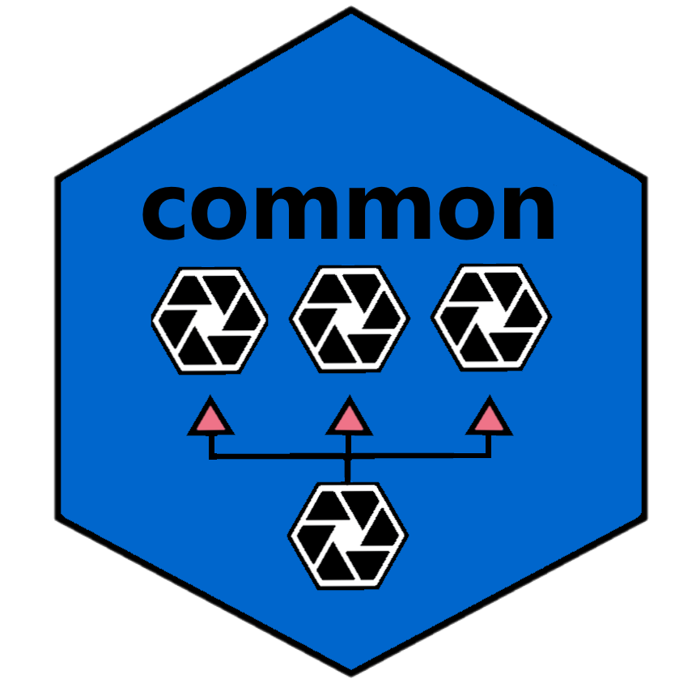

When working in Base R, there are some situations where you stop and wonder: “Why isn’t there a function to do that?” For example:
The answer to all of the above questions is that there should be. The purpose of the common package is to encapsulate these types of functions, and provide them to R users in a lightweight package. These functions are particularly useful for package developers, who might want to add these capabilities to their package without creating dependencies on tidyverse.
If you have ideas for more common functions, please submit your suggestion to the github issue list.
Installation
The easiest way to install the common package is to run the following command from your R console:
Then put the following line at the top of your script:
For examples and usage information, please visit the common documentation site here.
Introductory Videos
Here is a video introducing most of the major functions in the common package:

Here is an video elaborating on the source.all() function:

For complete function documentation, visit the reference page here
Getting Help
If you need help, the first place to turn to is the web site here
If you want to look at the code for the common package, visit the github page here.
If you encounter a bug or have a feature request, please submit an issue here.
See Also
The common package is part of the sassy meta-package. The sassy meta-package includes several packages that help make R easier for everyone, especially people with a background in SAS®. You can read more about the sassy package here.